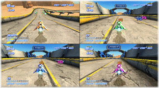

11
Multijoueur
Multijoueur
Affronte jusqu'à 3 amis lors d'une ligue en écran partagé. Chaque joueur doit disposer d'une télécommande Wii.

Remarque que chaque télécommande Wii que tu souhaites utiliser pour jouer doit être connectée à la console Wii (cf. page 3).